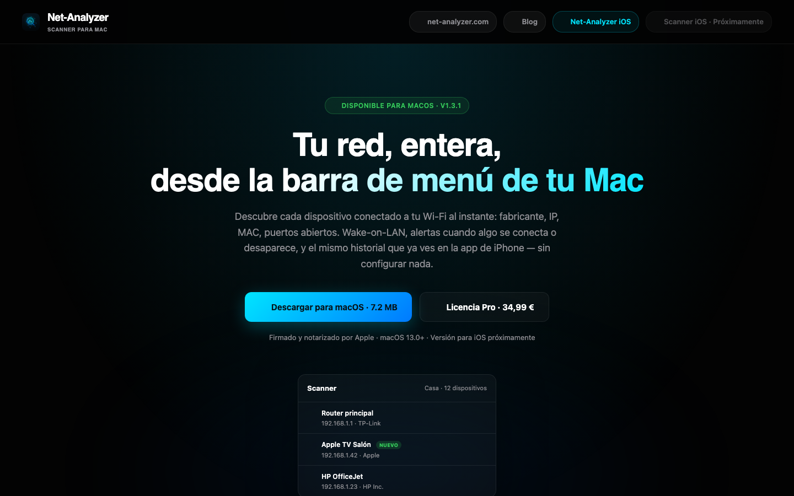
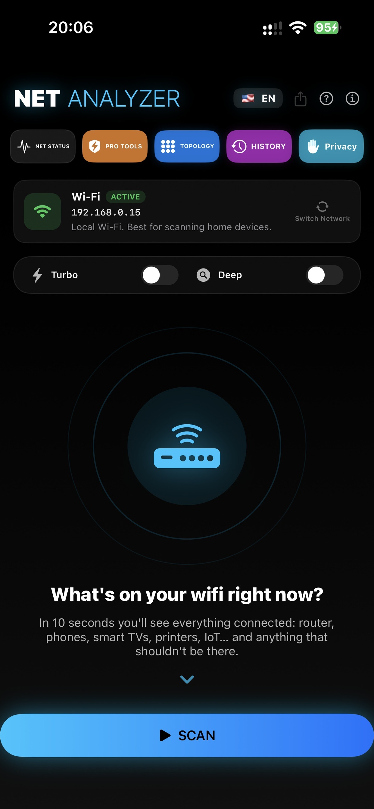
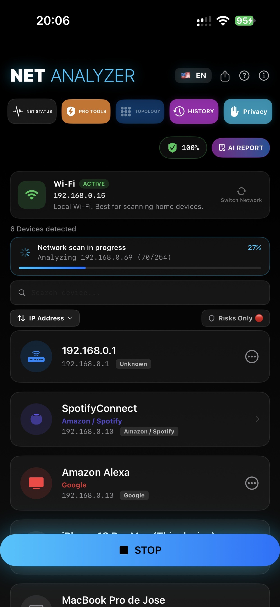
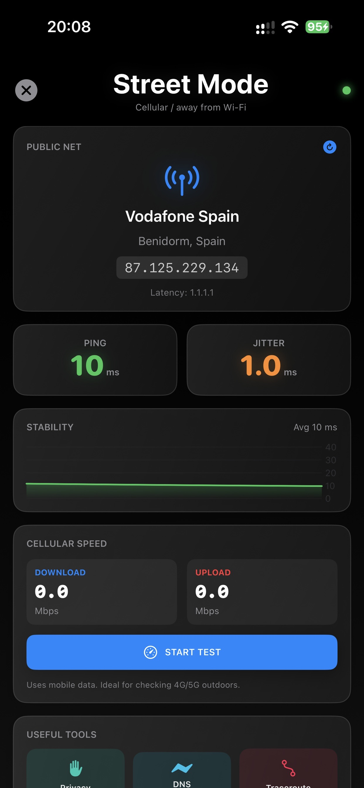

Download
Was ist das
Net-Analyzer Scanner ist eine leichte Menüleisten-App, die die Frage "Was hängt an meinem WLAN?" in Sekunden beantwortet: Sie findet jedes Gerät im LAN, nennt den Hersteller und warnt, wenn etwas Neues auftaucht.




Funktionen
Vollständige Geräteerkennung — Bonjour, SSDP, TCP, ARP, NDP, SNMP und SMB finden alles im LAN.
Herstellerkennung — die OUI-Datenbank verrät, wer jedes Gerät gebaut hat (Router, Handy, Kamera, IoT…).
Warnung bei neuen Geräten — Benachrichtigung, wenn sich etwas Unbekanntes verbindet.
Wake-on-LAN — Rechner aus der Ferne mit einem Klick aufwecken.
Router-Audit — Sicherheitschecks gegen dein Gateway.
Netzwerk-Tools — Ping, Port-Scan, Verlauf und Notizen pro Gerät.
Für die Menüleiste gebaut — eine leichte SwiftUI-App, die in der Menüleiste lebt.
Sechs Sprachen — ES / EN / FR / IT / DE / PT, mit remote verwalteten Updates.
So wird es verwendet
- 1DMG laden, App nach Programme ziehen und öffnen.
- 2Das Symbol sitzt in der Menüleiste — klicken und einen Scan starten.
- 3Nach Sekunden siehst du die Geräteliste: Name, IP, MAC und Hersteller.
- 4Warnungen aktivieren, um über neue Geräte informiert zu werden.
- 5Wake-on-LAN, Ping oder Port-Scanner direkt aus der Gerätekarte nutzen.
Voraussetzungen
Aktuelles macOS · Apple Silicon & Intel (Universal Binary) · Von Apple signiert und notarisiert.
Was dieses Repository enthält
Scanner-Net-Analyzer-<Version>.dmg— signiertes + notarisiertes InstallationsprogrammScanner-Net-Analyzer-<Version>.zip— Sparkle-Update-Archiv (EdDSA-signiert) für den In-App-Updater- Die App-Store-Edition wird über den App Store selbst aktualisiert.
Häufige Fragen
Warum sehe ich "unbekannte" Geräte?
Viele Geräte melden weder Namen noch Dienste. Der MAC-Hersteller (OUI) verrät meist die Antwort — suche nach "Apple", "Espressif" (IoT), "Samsung"…
Kann es einen ausgeschalteten PC aufwecken?
Ja, wenn Wake-on-LAN im BIOS/System aktiviert ist und das Gerät im selben Netz hängt (bzw. entsprechend konfiguriert ist).
Unterschied zwischen DMG und App-Store-Version?
Gleiche App; das DMG aktualisiert sich per Sparkle, die App-Store-Edition über Apple und läuft in der Sandbox.
Support
- Website: scanner.net-analyzer.com
- E-Mail: support@it-systems.es